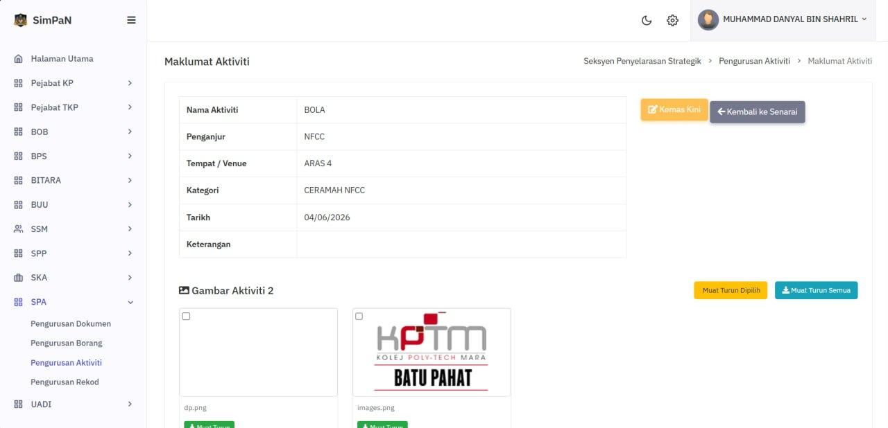
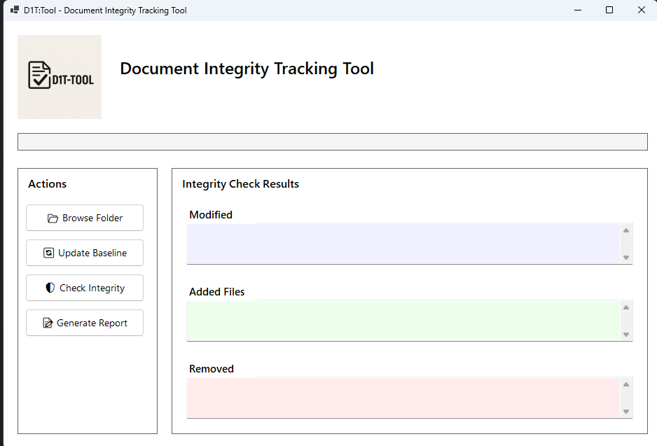
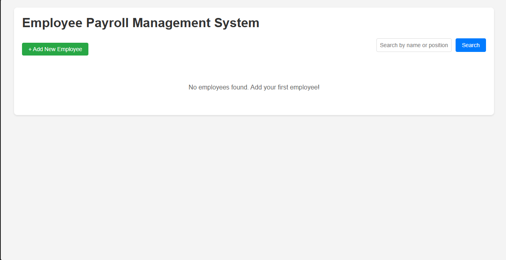

SimPaN Module
Goverment internal website that allows user to put their image and video
Im a cybersecurity student, im versatile in Any IT role :), i can develop website using laravel, i can do basic networking wifi configuration, IT support.
View My WorkI am an IT and Cybersecurity enthusiast with hands-on experience in infrastructure support, networking, and system analysis. With certifications in networking and practical exposure in IT technical support and system environments, I am passionate about building secure, reliable, and efficient technology solutions. I have worked on projects involving system security, file integrity monitoring, and IT infrastructure support, where I developed strong analytical, troubleshooting, and problem-solving skills. My interests lie in network security, infrastructure management, and emerging cybersecurity technologies. I am continuously learning and improving my technical expertise, aiming to grow into a Network Security or IT Infrastructure Specialist role. I value discipline, continuous improvement, and delivering solutions that make systems more secure and efficient.

Goverment internal website that allows user to put their image and video

Document Integrity Tools that ensure the authenticity and integrity of digital documents.

A simple PHP Laravel development that calculate salary of the employee.
I'm currently looking for a new opportunity. if you are open any junior roles, feel free to reach out!